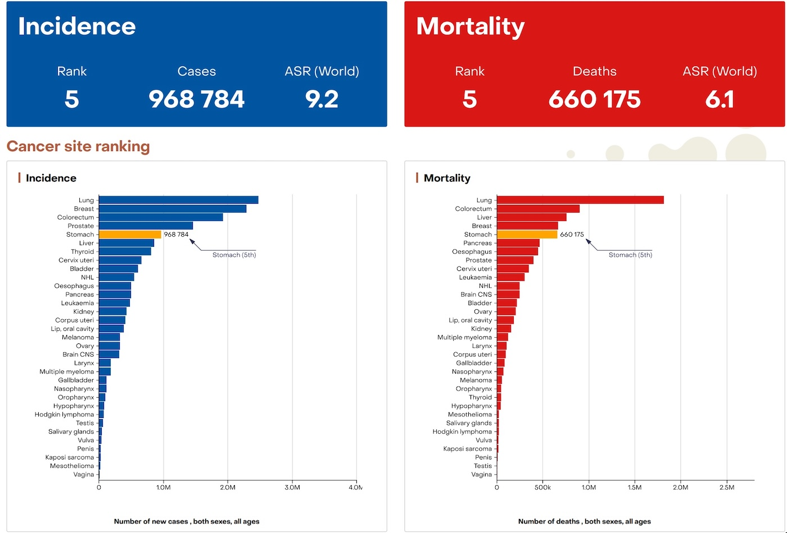
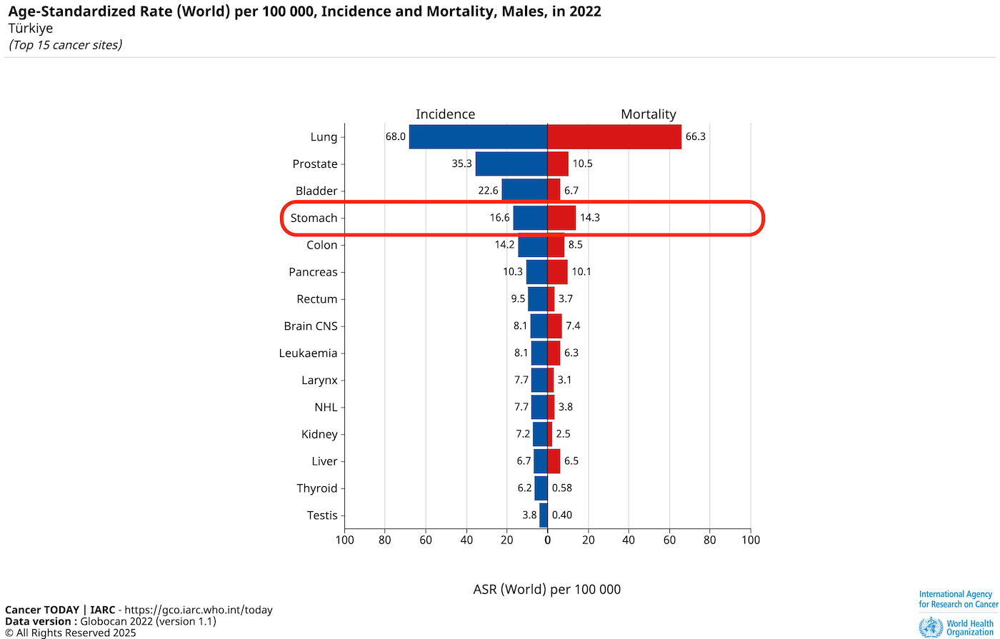
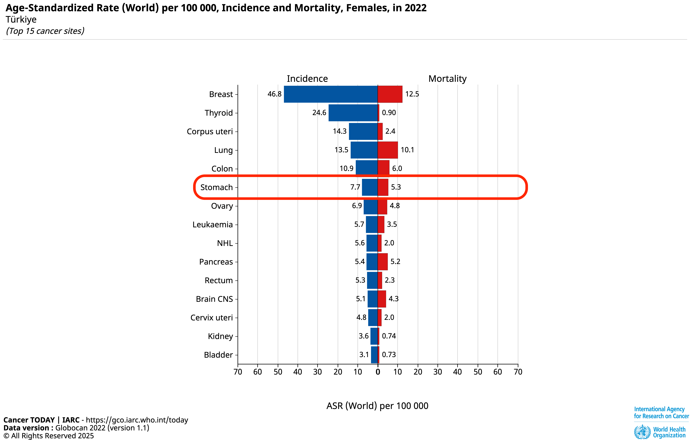
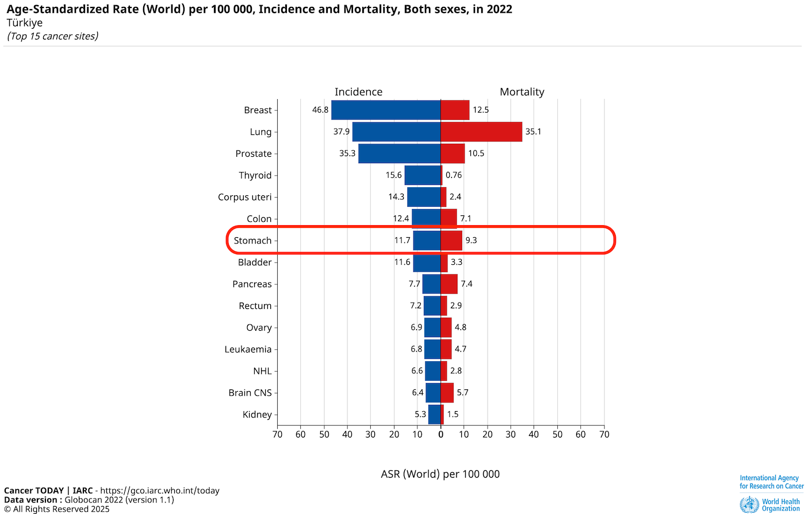

Halk arasında mide kanseri olarak bilinen tip genellikle Mide tümörleri içinde “Adenokanser” alt tipidir.
Epidemiyoloji
(Stomach Cancer - 2022 GLOBOCAN Verileri) ### Dünya İnsidans: Dünya genelinde 2022 yılında mide kanseri, 968.784 yeni vaka ile 5. sırada yer almaktadır. Bu, mide kanserinin dünya çapında yaygın bir problem olduğunu göstermektedir.
Mortalite: Mide kanseri, 660.175 ölüm ile yine 5. sırada yer almaktadır.
 Kaynak: GLOBOCAN 2022
Türkiye
👨 Erkekler (Türkiye)
 Kaynak: GLOBOCAN 2022
Mide kanseri insidansı (yeni vaka oranı) 100.000 kişide 16.6, ölüm oranı (mortalite) 100.000 kişide 14.2 olarak belirlenmiştir. Mide kanseri, erkeklerde en sık görülen kanserler arasında 5. sırada yer almaktadır.
Mortalite açısından ise akciğer kanserinden (66.3) sonra en ölümcül ikinci kanser türüdür.
👩 Kadınlar (Türkiye)
 Kaynak: GLOBOCAN 2022
Mide kanseri insidansı 100.000 kişide 7.7 olarak ölçülmüştür.
Mide kanserinden ölüm oranı (mortalite) 100.000 kişide 5.3 olarak kaydedilmiştir.
Dikkat çekici bir nokta, erkeklerde mide kanseri için insidans ve mortalite oranları arasındaki farkın oldukça az olmasıdır (16.6 vs 14.2). Bu durum, hastalığın erkeklerde tanı konduğunda genellikle ileri evrede olduğunu ve sağkalım oranlarının düşük olduğunu göstermektedir.
Tümü (Türkiye)

Kaynak: GLOBOCAN 2022
Risk Faktörleri
1. Enfeksiyöz Nedenler
- Helicobacter pylori Enfeksiyonu
- Epstein-Barr Virüsü
2. Yaşam Tarzı ve Diyet
- Sigara Kullanımı
- Aşırı Tuzlu ve İşlenmiş Gıda Tüketimi
- Düşük Taze Meyve ve Sebze Tüketimi
- Alkol Kullanımı
- Obezite
3. Kişisel ve Genetik Faktörler
- Aile Öyküsü
- İleri Yaş
- Kan Grubu A
- CDH1 Gen Mutasyonu
- Lynch Sendromu
- FAP (Ailevi Adenomatöz Polipozis)
4. Tıbbi Durumlar
- Kronik Atrofik Gastrit
- Pernisiyöz Anemi
- İntestinal Metaplazi
- Geçirilmiş Mide Cerrahisi Öyküsü
- Mide Polipleri (özellikle adenomatöz)
Tanı
Mide kanserinin tanısı, çeşitli yöntemlerin bir arada ve doğru şekilde kullanılmasıyla konur:
1. Üst GIS Endoskopi ve Biyopsi
- Altın standarttır. Lezyonların doğrudan görülmesini ve kesin tanı için çoklu biyopsi alınmasını sağlar.
- Kromoskopi ile biyopsi: Şüpheli alanlarda kromoskopi kullanılarak tanı doğruluğu artırılır.
2. Görüntüleme Yöntemleri
- Bilgisayarlı Tomografi (BT): Evreleme ve metastaz değerlendirmesinde temel yöntemdir.
- Manyetik Rezonans (MR): Özellikle lokal ve bölgesel yayılımın değerlendirilmesinde faydalıdır.
- PET/BT: Uzak metastaz araştırmasında yararlıdır; ancak rutin kullanımı her hasta için gerekli değildir, özellikle ileri hastalık veya şüpheli yayılım durumlarında tercih edilir. Mide kanserindeki duyarlılığı, diğer kanser türlerine oranla daha düşüktür.
3. Laboratuvar Testleri
- Tam kan sayımı: Hastalarda sıklıkla anemi bulunabilir.
- Biyokimya: Karaciğer ve böbrek fonksiyonları değerlendirilir; sistemik duruma ilişkin bilgi verir.
- Tümör belirteçleri (CEA, CA 19-9, CA 72-4): Takip ve ileri evre hastalıkta destekleyici rol oynar, tek başına tanı değeri sınırlıdır.
Mide kanseri tanısında endoskopi ve biyopsi esas olup, görüntüleme yöntemleri ve laboratuvar testleri hastalığın kapsamlı değerlendirilmesi ve tedavi planı oluşturulmasında tamamlayıcıdır. Tanıda multidisipliner yaklaşım büyük önem taşır.
Evreleme
Evreleme, kanserli bir hastada tümörün vücut içindeki yayılım derecesinin, yani hastalığın ne kadar ilerlediğinin belirlenmesi işlemidir. Mide kanserinde evreleme, tümörün mide duvarında ne kadar derinlikte olduğu (primer tümör), çevre lenf düğümlerine ya da uzak organlara (metastaz) yayılıp yayılmadığı gibi temel sorulara yanıt bulmayı amaçlar.
Neden Evreleme Yapılır?
- Tedavi Planı: Hastalığın evresi, uygulanacak tedavinin (cerrahi, kemoterapi, radyoterapi veya hedefe yönelik tedaviler) seçiminde belirleyicidir.
- Prognozun Belirlenmesi: Evre, hastalığın gidişatı ve sağkalım oranları hakkında en önemli bilgi kaynağıdır.
- Tedavi Etkinliğinin Değerlendirilmesi: Tedavi sonrası süreçte hastalığın tekrarlama (nüks) veya ilerleme riskini ortaya koymak için gereklidir.
- Klinik Araştırmalara Uygunluk: Hastaların araştırma ve klinik çalışmalara uygunluğunu değerlendirmek için de kullanılır.
Nasıl Yapılır?
Mide kanserinde evreleme, çok yönlü bir yaklaşımla yapılır. Bu süreçte aşağıdaki unsurlar değerlendirilir:
TNM Sistemi
Dünya genelinde en çok kullanılan sistem “TNM Sınıflaması”dır (UICC/AJCC).
- T (Tümör): Tümörün mide duvarında ne kadar derine uzandığı (T1-T4).
- N (Nod): Yakın (bölgesel) lenf düğümlerinde tutulum (N0-N3).
- M (Metastaz): Uzak organlara yayılım (M0: yok, M1: var).
Bu kriterlerle;
- Evre 0’dan (en erken)
- Evre IV’e (uzak metastaz varlığı) kadar sıralanır.
Evreleme Yöntemleri
- Görüntüleme Yöntemleri
- BT (Bilgisayarlı Tomografi): Karın ve göğüs BT, yayılımın ve lenf nodlarının değerlendirilmesinde ana yöntemdir.
- MR (Manyetik Rezonans): Özellikle pelvik yayılım ya da karaciğer lezyonlarında ek bilgi sağlar.
- PET/BT: Uzak metastaz şüphesi varsa kullanılır. Ancak, düşük dereceli veya diffüz tip tümörlerde duyarlılığı sınırlı olabilir.
- Endoskopik Ultrason (EUS): Tümörün mide duvarındaki derinliği ve çevre lenf nodu tutulumunun değerlendirilmesinde çok değerlidir.
- Ekografi (USG): Karaciğer metastazı yönünden tarama amacıyla yapılabilir.
- BT (Bilgisayarlı Tomografi): Karın ve göğüs BT, yayılımın ve lenf nodlarının değerlendirilmesinde ana yöntemdir.
- Tanı Amaçlı Cerrahi
- Tanısal Laparoskopi: Özellikle evre III hastalarda, BT/MR ile saptanamayan küçük karın içi metastazların (özellikle periton) tespiti için uygulanır. Cerrahi planlamadan önce önemli bilgi sağlar.
- Ek Testler
- Laboratuvar Tetkikleri: Karaciğer fonksiyon testleri, tümör belirteçleri (örn. CEA, CA 19-9) destekleyici olur ancak tek başına tanı koydurmaz.
Evreleme, mide kanseri yönetiminde merkezî bir öneme sahiptir. Hastalığın evresi; hastanın tedavi şemasını, iyileşme şansını ve takip stratejilerini belirler. Bu nedenle, evreleme multidisipliner ekip çalışmasıyla, hem klinik (görüntüleme, laboratuvar) hem de gerektiğinde cerrahi yöntemlerle titizlikle yapılmalıdır.
Tedavi
Mide kanseri tedavisi, hastalığın evresi, tümörün yerleşimi, hastanın performans durumu ve ek hastalıklar göz önüne alınarak planlanır. Seçilecek tedavi genellikle cerrahi, kemoterapi, radyoterapi ve hedefe yönelik/immünoterapi seçeneklerinin bir kombinasyonundan oluşur.
1. Cerrahi Tedavi
- Küçük ve erken evre tümörlerde (Evre 0-I): Cerrahi (total ya da subtotal gastrektomi) en etkili tedavidir. Japonya ve Kore gibi Doğu Asya ülkelerinde “endoskopik mukozal rezeksiyon (EMR)”, erken mide kanseri (derinlik ve lenf nodu riski az olanlar) için sıkça tercih edilir.
- Lenf nodu diseksiyonu: D2 disseksiyon (genişletilmiş lenf nodu çıkartılması) Japonya/Kore’de rutin (standart), Batı kılavuzlarında (NCCN, ESMO) ise, deneyimli merkezlerde yapılması önerilir.
2. Perioperatif / Adjuvan / Neoadjuvan Kemoterapi
- NCCN (ABD) ve ESMO (Avrupa), tümör mide duvarının derinliğine inmişse (T2 veya üstü ve/veya lenf nodu pozitifliği varsa) perioperatif (ameliyat öncesi ve sonrası) kemoterapiyi standart olarak öneriyor.
- Japon ve Kore kılavuzları ise, özellikle D2 diseksiyon sonrası genellikle adjuvan (ameliyat sonrası) S-1 (bir oral fluoropirimidin) gibi ajanlarla kemoterapiyi tercih edebiliyor.
- Batıda perioperatif FLOT (5-FU, Lökavorin, Oxaliplatin, Docetaxel kombinasyonu) protokolü sıklıkla önerilir.
- Doğu Asyada S-1 veya CapeOX gibi ajanlar ön plandadır.
3. Radyoterapi
- Postoperatif kemoradyoterapi Batı’da (özellikle D0/D1 lenfadenektomi yapılan hastalarda veya yetersiz cerrahi sınır varsa) daha çok kullanılır.
- Doğu Asya kılavuzlarında (Japonya, Kore) D2 disseksiyonun standart olması nedeniyle rutin radyoterapi daha az önerilir.
4. Hedefe Yönelik Tedaviler ve İmmünoterapi
- HER2 pozitif tümörlerde: Trastuzumab (anti-HER2 antikor) kombinasyon kemoterapi ile birlikte kullanılabilir (tüm kılavuzlarda ortak öneri).
- PD-1/PD-L1 inhibitörleri (örn. pembrolizumab, nivolumab): Özellikle ilerlemiş evre/refrakter tümörlerde veya yüksek MSI/dMMR (mikrosatellit instabilite/yetersiz DNA tamir) durumu varsa çoğu kılavuz bu ajanları öneriyor.
- Claudin 18.2 hedefli ajanlar (örn. zolbetuximab) ve diğer moleküler hedefli tedaviler, son yıllarda klinik çalışmalarda umut vaat ediyor.
Güncel Kılavuzlar Arasındaki Temel Farklılıklar
| NCCN (ABD) | ESMO (Avrupa) | Japon/Kore Kılavuzları | |
|---|---|---|---|
| Endoskopik rezeksiyon | Seçilmiş hastada | Seçilmiş hastada | Daha yaygın, erken evrede |
| Kemoterapi yaklaşımları | Daha agresif, perioperatif FLOT | Perioperatif FLOT önerisi baskın | Genellikle adjuvan kemoterapi, S-1 ön planda |
| Lenf nodu diseksiyonu | D1/D2, merkez deneyimine bağlı | D2 önerilebilir | D2 diseksiyon standart |
| Radyoterapi | Yetersiz cerrahi yapılan olguda adjuvan | Seçilmiş olguda | Nadiren, genelde gerek yok |
| Hedefe yönelik/immünoterapi | HER2+, MSI/dMMR+, 3. basamakta PD-1 ajanları | HER2+, PD-1 ajanları | Benzer, güncel eklemeler mevcut |
- Tedavi kararları mutlaka multidisipliner bir ekip tarafından verilmelidir.
- Tümörün biyolojisi (HER2, MSI, PD-L1) ve hastanın genel durumu standart yaklaşımları değiştirebilir.
- Batı ülkelerindeki yaklaşım, sıklıkla daha agresif kemoterapi ve radyoterapiyi içerirken, Doğu Asya cerrahide daha radikal yöntemleri ve farklı ajanları ön plana çıkarır.
- Yeni moleküler hedefler ve immünoterapiler, klinik araştırmalarda ilgi odağıdır ve standarda girmeye başlamıştır.
Prognoz
Mide kanserinin prognozu, yani hastalığın gidişatı ve beklenen sağkalım süresi, başta tanı anındaki evre olmak üzere birçok faktöre bağlıdır. Son yıllarda tanı ve tedavideki gelişmelere rağmen, mide kanseri dünyada halen önemli bir ölüm nedenidir.
1. Evrelere Göre Sağkalım Oranları
Mide kanseri için beş yıllık sağkalım oranları genellikle şu şekildedir:
| Evre | ABD/Avrupa (%) | Japonya/Kore (%) |
|---|---|---|
| Evre I | 70-90 | 90-95 |
| Evre II | 45-60 | 60-80 |
| Evre III | 20-35 | 30-50 |
| Evre IV | 5-10 | 10-20 |
- Erken evrede tanı koyulan hastalarda sağkalım çok yüksektir.
- Gelişmiş ülkelerde tarama programlarının yaygınlığına bağlı olarak Doğu Asya’da (özellikle Japonya ve Kore) hastalık genellikle daha erken evrede yakalanır ve sağkalım oranları Batı ülkelerine göre belirgin şekilde daha iyidir.
- Türkiye gibi ülkelerde erken tanı oranı Doğu Asya’ya göre düşük, Batı ülkelerine göreyse biraz daha iyileşme eğilimindedir.
2. Prognozu Belirleyen Faktörler
Prognoz üzerinde etkili olan başlıca faktörler şunlardır:
1. Evre (EN KRİTİK FAKTÖR)
- Primer tümörün mide duvarına invazyon derinliği (T aşaması)
- Bölgesel lenf nodu tutulumu (N aşaması)
- Uzak metastaz varlığı (M aşaması)
2. Tümörün Lokasyonu
- Proksimal (kardia/fundus) yerleşimli tümörlerin prognozu genellikle daha kötüdür.
- Antrum ve distal yerleşimli tümörlerde sağkalım daha yüksektir.
3. Tümörün Histolojik Tipi
- İntestinal tip (Lauren sınıflaması): Prognozu genellikle daha iyidir.
- Diffüz tip (özellikle signet-ring hücreli): Daha agresiftir ve sağkalım düşük olabilir.
4. Rezeksiyon Durumu
- R0 rezeksiyon (tümörün mikroskopik olarak tam çıkarılması) yapılan hastalarda prognoz anlamlı şekilde daha iyidir.
- Pozitif cerrahi sınır (R1/R2 rezeksiyon), nüks riskini artırır ve sağkalımı olumsuz etkiler.
5. Lenf Nodu Tutulumu ve Dizilimi
- Tutulan lenf nodu sayısı ve oranı, sağkalım için çok önemlidir.
6. Moleküler ve Biyolojik Faktörler
- HER2 pozitifliği: Tedaviye uygunluk sağlar ve bazı hastalarda sağkalımı uzatabilir.
- MSI/dMMR yüksekliği: Bu hastalar bağışıklık kontrol noktası inhibitörlerinden daha fazla fayda görebilir.
- Diğer genetik ve moleküler değişiklikler de araştırılmaktadır.
7. Hastanın Genel Durumu ve Eşlik Eden Hastalıklar
- Kötü performans durumu, ciddi ek hastalıklar (ör. diyabet, kalp yetmezliği) prognozu olumsuz etkiler.
8. Uygulanan Tedavi
- Cerrahi kalitesi (D1-D2 diseksiyon, R0 rezeksiyon)
- Doğru ve zamanında adjuvan/perioperatif tedavi uygulaması
9. Ülke ve Sağlık Altyapısı
- Erken tanı olanakları, tarama programları
- Deneyimli merkezlere erişim, multidisipliner ekip yaklaşımı
3. Ülkeler ve Bölgeler Arasındaki Farklar
- Japonya ve Kore: Yoğun tarama programları sayesinde vakaların %50’den fazlası erken evrede tanınır. Bu nedenle sağkalım oranları Batı ülkelerine göre çok daha yüksektir.
- ABD/Avrupa: Genellikle daha ileri evrede tanı konulur, sağkalım oranı düşüktür.
- Gelişmekte olan ülkeler: Erken tanı oranı ve tedaviye erişim, prognozda belirleyici olmaktadır.
4. Güncel Yaklaşım ve Takip
- Günümüzde tümörün biyobelirteçleri (HER2, MSI, PD-L1) de prognozda ve tedavi planı seçiminde gitgide daha çok önem kazanmaktadır.
- Takip ve erken nüks tespiti, sağkalım üzerinde pozitif etki yaratabilir.
Mide kanserinin prognozu çok sayıda faktöre bağlıdır. Erken teşhis ve modern tedaviyle sağkalım oranları belirgin şekilde artmaktadır. Doğu Asya ülkelerindeki başarılı tarama ve tedavi stratejileri, Batı’ya göre sağkalımı çok daha yükseltmektedir. Tüm hastalarda en iyi sonuç için multidisipliner yaklaşım ve bireyselleştirilmiş tedavi esastır.
Sayfa içeriği sadece bilgilendirme amaçlıdır, tanı ve tedavi için mutlaka doktorunuza başvurunuz.